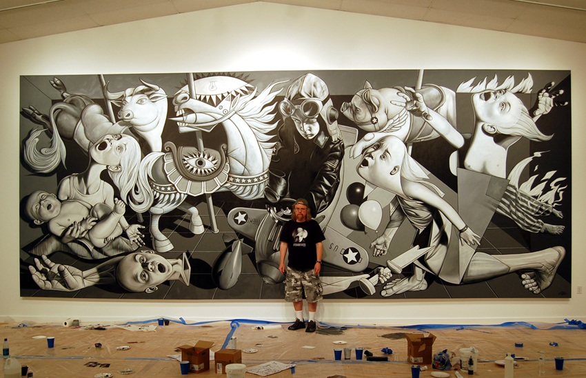
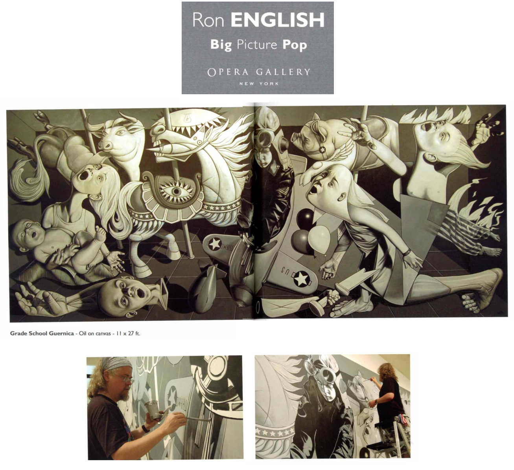
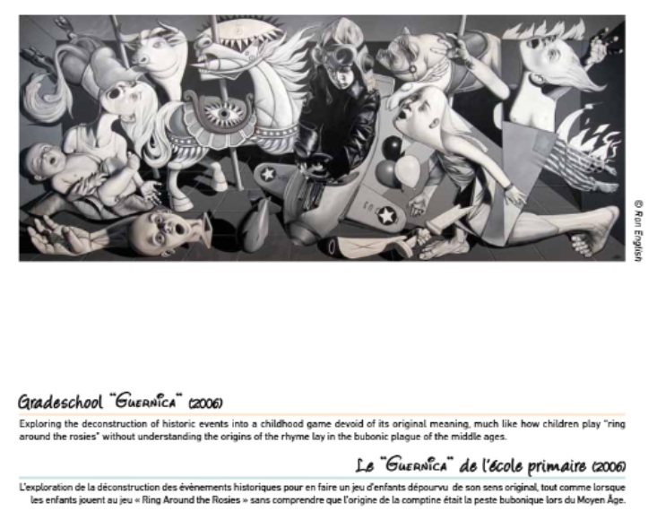
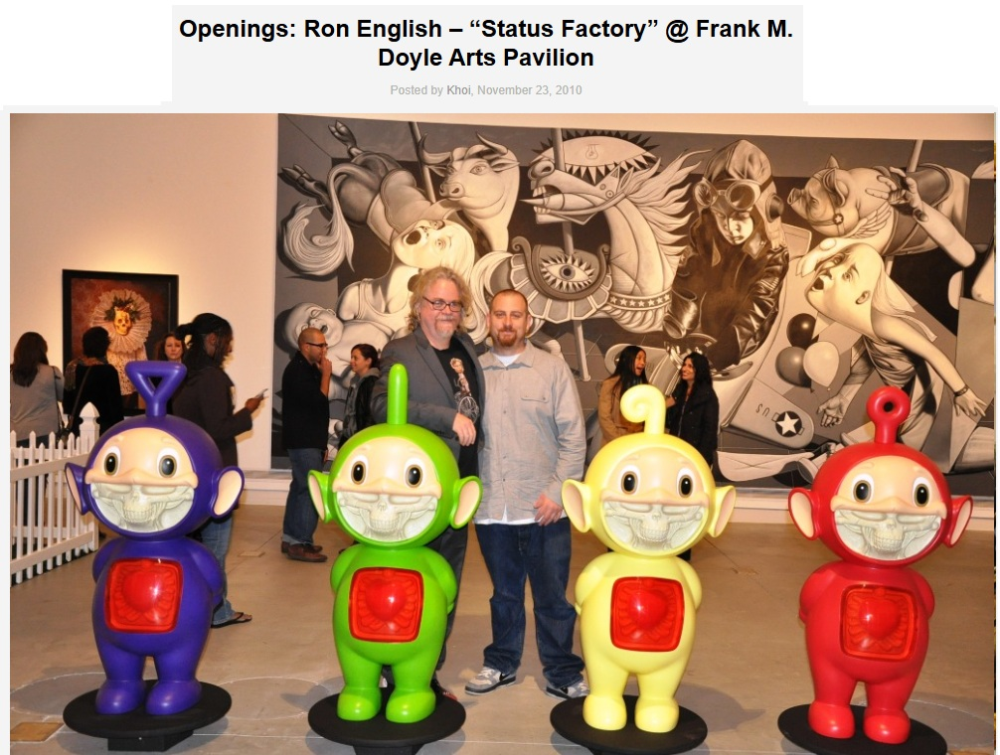
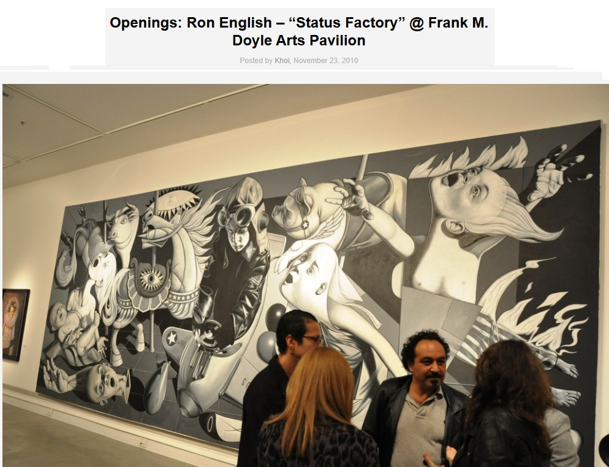
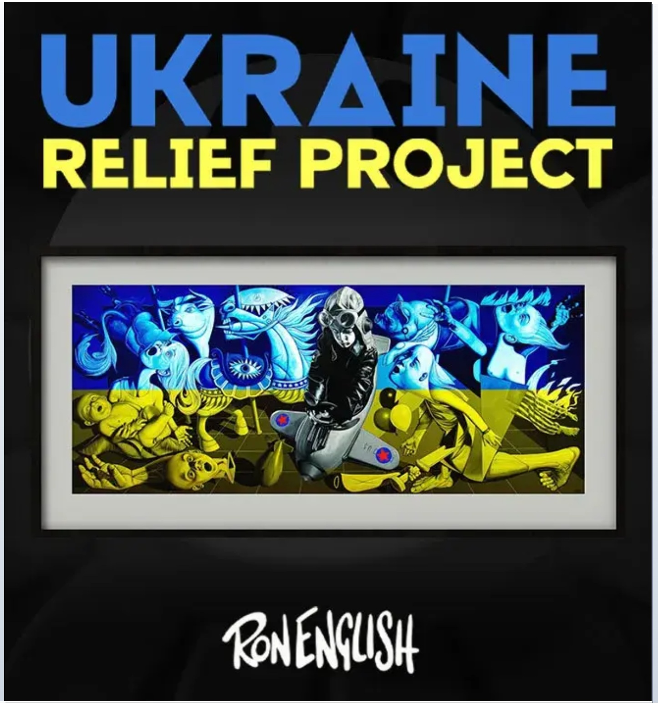

Exhibitions
POWER PATHOS, Station Museum of Contemporary Art, Houston, Texas, US, June 21–September 24, 2006.
Big Picture Pop, Opera Gallery, New York, New York, US, November 29–December 20, 2007.
Status Factory – The Art of Ron English, Frank M. Doyle Arts Pavilion (Orange Coast College), Costa Mesa, California, US, November 12–December 17, 2010.
Ron English – You Are Not Here, International Museum of Art & Science (IMAS), McAllen, Texas, US, March 31–August 14, 2011.
Guernica, Allouche Gallery, New York, New York, US, September 23–October 19, 2016.
Reimagining “Guernica” / La réinvention du “Guernica”, Museo de la Paz de Gernika, Gernika-Lumo, Bizkaia, Spain, April 4–December 10, 2017.
Literature
Ron English, Abject Expressionism: The Art of Ron English (San Francisco: Last Gasp, 2007), p. 75. ISBN 978-0867196894.
Ron English, Son of Pop: Ron English Paints His Progeny (San Francisco, California: 9mm Books and The Shooting Gallery, 2007), p. 87. ISBN 978-0976632511.
Don Goede (ed.), Abraham Obama: A Guerrilla Tour Through Art and Politics (San Francisco: Last Gasp, 2009), p. 14. ISBN 978-0867197228.
Ron English, Death and the Eternal Forever (Korero Press, 2014), p. 150. ISBN 978-0957664920.
Ron English, Original Grin: The Art of Ron English (Paris: Cernunnos, 2019), p. 230. ISBN 978-2374950938.
Notes
According to the printed POWER PATHOS exhibition catalogue, Ron English worked at the Station Museum in the weeks prior to the opening to produce this painting.
In Original Grin, this work was erroneously reported as 12 × 27 inches.
The composition references Pablo Picasso’s Guernica.

Ron's Personal Photo Archive

Ancillary Documentation
The following materials document the work in exhibition catalogues, museum materials, exhibition photography, video documentation, related reproductions, and wider online circulation.








